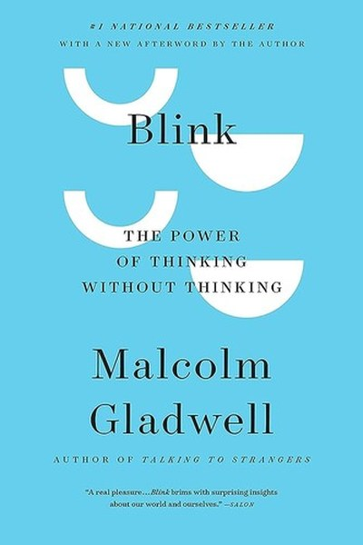

Library › Psychology & People
Blink — Summary & Key Lessons

The power of thinking without thinking — and when to trust your gut.
📖 OPEN THE FULL INTERACTIVE BREAKDOWN →🌐 Read it in Hindi, Hinglish, Gujarati, Tamil & 22 more languages — free, with audio.
💡 The Big Idea
Your brain makes decisions in the blink of an eye — Gladwell calls it 'thin-slicing' — and these snap judgments are often more accurate than hours of analysis. But the same machinery that produces genius-level instincts also produces prejudice and error. The book is a tour of both: how art experts spotted fake statues instantly, how ER doctors' intuition saved lives, and how a confident first impression of a president shaped an election. The skill isn't trusting your gut — it's knowing when your gut is a genius and when it's a liar.
🧠 The 6 Key Lessons
Lesson 1: Thin-Slicing: The Genius of Two Seconds
The Theory
Gladwell's central concept: we can extract remarkable insight from tiny slices of experience. Art experts knew a statue was fake within seconds — not from analysis but from a sudden 'wrongness' feeling built on years of expertise. The lesson: your unconscious has a database your conscious mind can't query directly — and it speaks in feelings first.
📖 Example: The Getty's kouros statue fooled experts who analyzed it for months, but one art historian felt instant 'intuitive repulsion' — his two-second judgment was right. The practical edge: 'thin' is not a one-time decision — it's a habit that compounds with every… Read the full example →
⚡ Do this: For one decision this week, record your first two-second instinct BEFORE you analyze. Compare it with your final decision and note the gap.
Lesson 2: Expertise Is What Makes the Gut Trustworthy
The Trained Eye
The book's key caveat: thin-slicing works when it's built on deep, real experience. The art experts' instant judgments were years of training compressed. A novice's gut is just noise. The lesson: trust your instincts only in domains where you've put in the reps — and in other domains, slow down.
📖 Example: Marriage researchers could predict divorce from a three-minute video of a couple — because they'd coded thousands of hours of such videos. Their 'blink' was earned. Here's the part that usually gets missed: 'expertise is what makes the gut trustworthy' works… Read the full example →
⚡ Do this: List your genuine areas of expertise. In those, allow faster decisions; outside them, force slower ones.
Lesson 3: The Storytelling Problem: We Explain Too Much
The Gap
Gladwell shows that when we add conscious reasoning to our snap judgments, we often make them worse — we invent stories that feel logical but miss the truth. The lesson: not every decision benefits from more analysis. Sometimes the first answer is the best and the second-guessing is the error.
📖 Example: In studies, people who could articulate reasons for choosing a poster or jam made worse choices than those who just felt their way. The real test of this lesson is a bad day: the principle that survives a crisis, a tight deadline and a doubting colleague is… Read the full example →
⚡ Do this: Try one decision by instinct-only: choose without listing pros and cons, then live with the choice and observe.
Lesson 4: The Dark Side: When the Blink Goes Wrong
The Prejudice
The same machinery produces snap racism, sexism and bias. Gladwell's famous example: orchestras that hired more women once auditions went blind — because judges' two-second judgments were contaminated by what they saw. The lesson: your instincts can be wrong in systematic, harmful ways, and the fix is structural — remove the information that biases the blink.
📖 Example: Blind auditions — musicians playing behind screens — increased women's hiring dramatically. The bias wasn't malice; it was automatic. In practice, 'dark side' shows up in tiny daily choices long before it shows up in outcomes — the choice is invisible, but… Read the full example →
⚡ Do this: Identify one decision process where you could remove biased information (names, looks, first impressions) — and make the process blind.
Lesson 5: First Impressions Are Contagious and Dangerous
The Warren Harding Error
Gladwell's cautionary tale: Warren Harding looked presidential, so everyone assumed he was — and he became one of the worst US presidents. The lesson: charisma, looks and confidence are powerful blink triggers that tell you almost nothing about competence. The most dangerous people are the ones who look right.
📖 Example: Harding's good looks and warm presence made him the 'inevitable' candidate; the same mechanism promotes attractive but unqualified leaders everywhere. Most people nod at this principle and change nothing. The gap between agreeing and acting is where the… Read the full example →
⚡ Do this: When evaluating a person — hire, partner, politician — deliberately ignore the first impression and ask: what has this person actually built or verified?
Lesson 6: Control the Environment, Not Just the Instinct
The Fix
The book's practical conclusion: you can't always control your blink, but you can control the environment that feeds it. Stress makes the blink worse; information overload makes it worse; structured information makes it better. Doctors' intuitions improved with better presentation of data. Design the inputs, and the instinct improves.
📖 Example: ER doctors' snap diagnoses of heart attacks improved dramatically when the decision environment was re-engineered — better protocols, clearer data. The uncomfortable truth about this lesson: it requires doing the boring version first — the unglamorous reps… Read the full example →
⚡ Do this: For one high-stakes decision, redesign the information you look at before deciding: fewer, cleaner, more relevant inputs.
✅ 5-Step Action Plan
- Record your two-second instinct before analyzing your next decision.
- Trust fast instincts only in your genuine domains of expertise.
- Try one instinct-only decision and observe the outcome.
- Make one decision process blind to biased information.
- Redesign the information environment for one high-stakes choice.
⚠️ When This Doesn't Work
Blink's celebration of snap judgment is thrilling — and it's exactly the mechanism that produced the Warren Harding error the book itself describes: we trust charismatic first impressions and they betray us. The deeper caveat: the book can license intuition in domains where the reader has no expertise. Gladwell's experts earned their blinks with decades of practice; a reader who 'trusts their gut' in an unfamiliar domain is not thin-slicing, they're guessing with confidence. The skill is not trusting your gut — it's knowing which guts have earned trust.
💀 The Graveyard Proves It
💍 Gerald Ratner — The £500M Joke. Burn: £500M and his own name. Read the full case study →
💬 Best Quotes from Blink
- “The key to good decision making is not knowledge. It is understanding.”
- “We have, as human beings, a storytelling problem. We're a bit too quick to make up a coherent story.”
- “Truly successful decision making relies on a balance between deliberate and instinctive thinking.”
Interactive version: mark lessons as read, listen in your language, share quote cards.